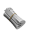

.png)


.png)
Features that help you Tweet smarter
Analytics
We constantly moniter your audience as it grows -- so you can Tweet when your fllowers are most likely to be online and ready to engage with your content.
Smart analyzer
Chirp automaticlly recognically recognizes your followers' most active time and automatically sends you notification if you're missing out on an opportunity

Scheduled Your Tweets
Quality tweets drive tons of engagement. With Chirp, you can write tweets in an advance and schedule them when your audience in most likely to read
Dark Mode
Friendly on the eyes, no matter what time you write your Tweets. All colors are chosen to make sure your eyes are at ease at all times.

Sara May
@sara_may
I just tried out @Chirp and it's amazing, love all the analytics i can see.
March 2, 2021
Jack Scott
@jackscott_
I initially started usisng Chirp to support the co-founder as i personally knew him, but after having tried it out for a few weeks, i can genuinely say thia changed my Twitter game.
March 2, 2021
Jessica May
#jmay98
Absolutely love everything about Chirp, from the design to how everything works smoothly.
March 2, 2021